|
| Extrusion (Выдавливание) |
|
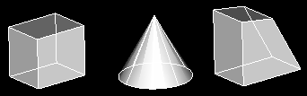
После того как на эскиз наложены все ограничения, с помощью разнообразных команд его можно превратить в трёхмерную модель. Самой простой и
очевидной из них является Extrude. Для создания тела выдавливания эскиз профиля выдавливается по третьей оси на расстояние, равное заданной толщине
тела. Профиль может выдавливаться в любом из направлений или в двух направлениях сразу (так называемое выдавливание от средней плоскости).
Браузер |
Нажатием правой клавиши мыши на иконке Профиль (Profile) окна браузера вызывается контекстное меню, где необходимо выбрать пункт Extrude. |

Кнопка инструментов
(Extrude) |
 |
Меню |
Part -> Sketched Features -> Extrude |
Команда |
AMEXTRUDE |
|
| Диалоговое окно Extrusion Feature |
|

OPERATION
Определяет тип Булевой операции для создания элемента выдавливания.
Base. Добавляя материал, создает первый элемент детали. Blind (Глухой), Mid Plane (Глухой от Средней Поверхности) - единственные опции
завершения для операции Base.
Cut. Удаляет материал из выбранной детали.
Join. Добавляет материал к выделенной детали.
Intersect. Создает новый элемент из общего объема существующих деталей и выдавленных элементов.
Split. Создает новую деталь, вырезая элемент выдавливания из
существующей детали.
TERMINATION
Определяет метод окончания элемента выдавливания. Для новых деталей,
заданная по умолчанию опция завершения Blind (Глухой). Для
существующих деталей, значение по умолчанию - последняя используемая
опция завершения.
Blind. Выдавливает элемент на указанную глубину и в направлении
отображаемых стрелок.
Through. Вырезает насквозь через твердотельную модель. Недоступна
при соединении (Join) геометрии.
To Face / Plane. Выдавливает профиль через деталь, используя
текущую плоскость эскиза как среднюю плоскость для элемента выдавливания.
From To. Определяет начальную плоскость или грань и конечную
плоскость или грань элемента выдавливания.
Mid Plane. Выдавливает профиль на одинаковую глубину в обоих
направлениях, останавливаясь на указанной глубине. Недоступна при
соединении (Join) геометрии.
SIZE
Определяет объем выдавливания.
Distance. Определяет расстояние для элемента
выдавливания. Вы можете вводить выражения, уравнения или конструктивные
переменные в виде значений.
Draft Angle.Определяет уклон элемента выдавливания. Отрицательное значение
создает отрицательный уклон. Разрешенный диапазон от +90° до –90°.
|
| Пример создания объёмного тела методом выдавливания |
|
Шаг 1 |
Создаётся эскиз замкнутого профиля |
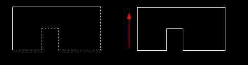
Шаг 2 |
Введём AMPROFILE или щелкнем мышью на пиктограмме Profile. Выбираем профиль. |
Шаг 3 |
Введём AMPARDIM или щелкнем мышью на пиктограмме Constrain Dimension (Установка размеров).
Проставим размеры сторон и получим полностью образмеренный профиль. |
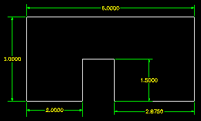
Шаг 4 |
Нажмем клавиши 8 и <Enter> для получения изометрической проекции. |
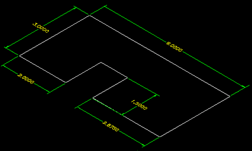
Шаг 5
| Введём AMEXTRUDE или щелкнем мышью на пиктограмме Extrude(Выдавливание). |
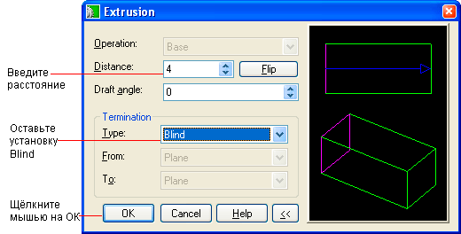
Наблюдаем на экране трехмерное тело
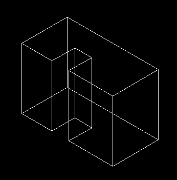
Внимание! Диалоговое окно команды Extrude будет иметь разный вид в зависимости от того,
выполняется ли операция выдавливания над первым профилем (т.е. создается ли так называемая базовая деталь)
или эскиз представляет собой дополнение к исходной базовой детали. Во втором случае становятся доступными
дополнительные опции в разделе меню Operation.
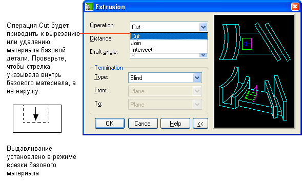
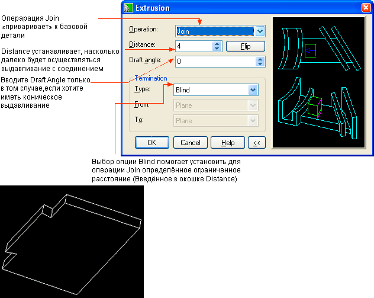
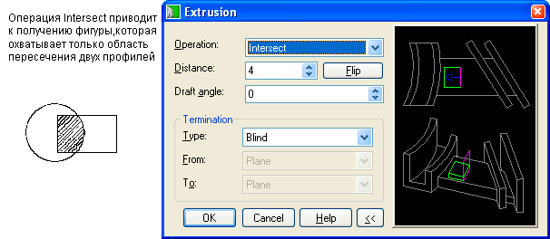
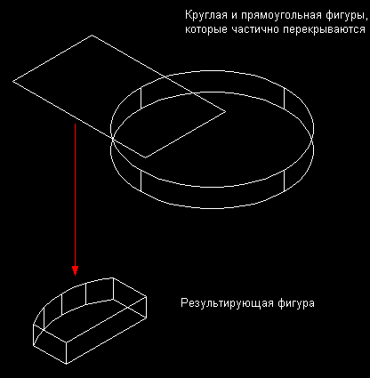
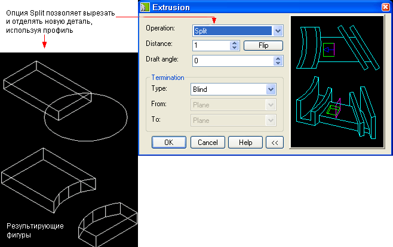
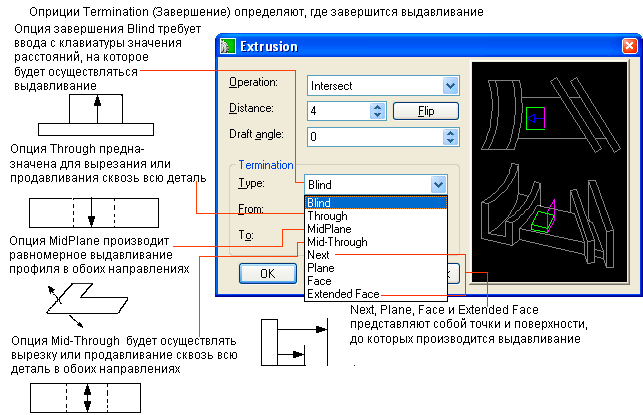
|
| Пример построения элемента выдавливания |
|
|